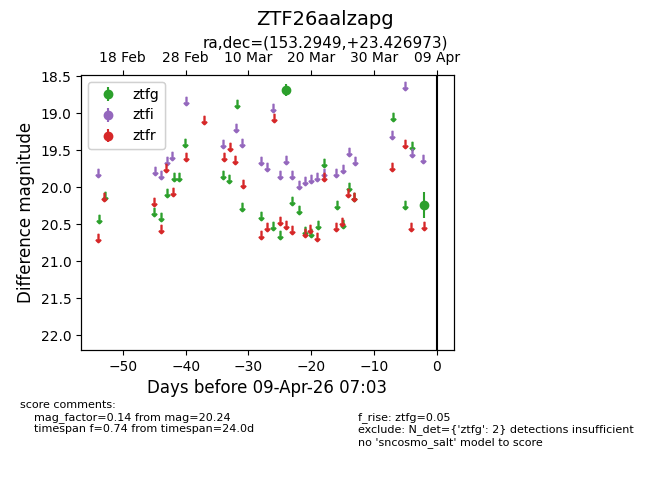
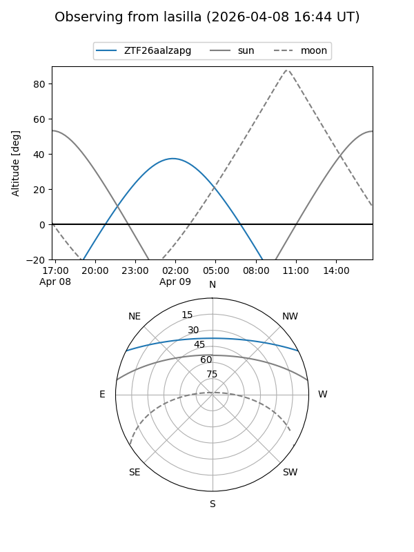
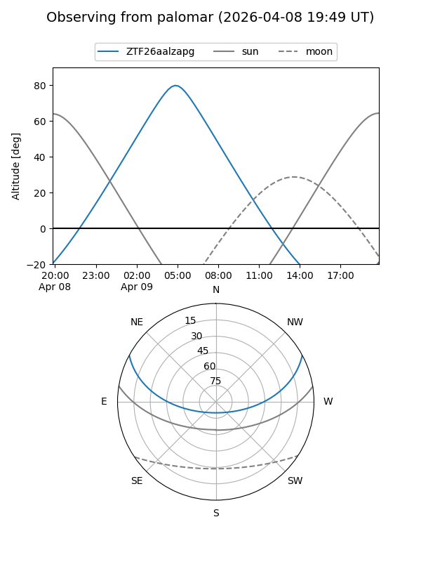

ZTF26aalzapg
Target ZTF26aalzapg at 2026-04-09 07:09
Aliases and brokers:
FINK: link
Lasair: link
ALeRCE: link
alt names
ZTF26aalzapg (ztf,fink_ztf)
Coordinates:
equatorial (ra, dec) = 153.2949,+23.42697
equatorial (HMS+DMS) = 10:13:10.77,+23:25:37.10
galactic (l, b) = (209.8667,+54.17722)
Flags:
Photometry:
last ztfg=20.24
2 ztfg detections
Lightcurve

Visibility


Additional plots